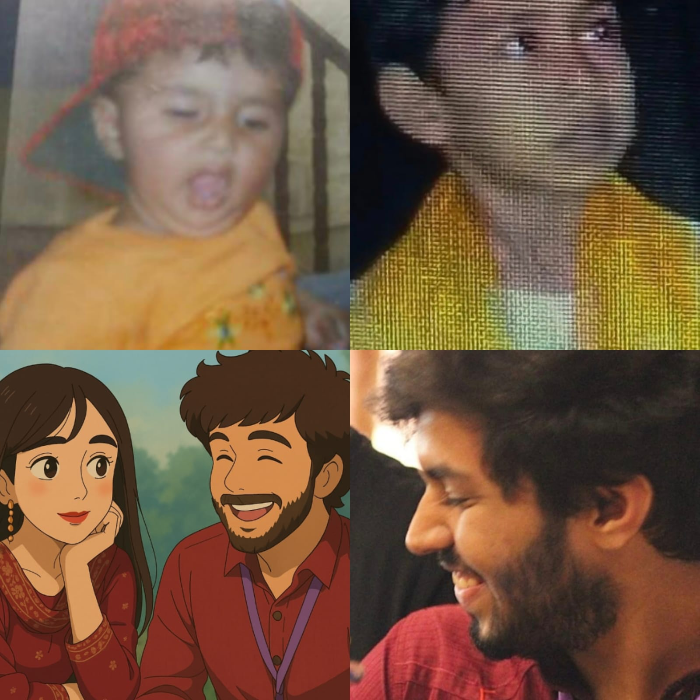

H a p p y
B i r t h d a y


Dear Jawad


h
a
p
p
y
-
b
i
r
t
h
d
a
y
-


I would have send you a gift better than cheesecake this time but you would prolly hire a hitman , if i do that sksksk so i have to do yeh- par hrowbrh i wish i could give you more , eitherways it's YOUR BIRTHDAY 😭👋and i saw you age from 16 to 19 and it just makes me so happy that you were with me all this time , where do i even start?gosh i love you and i mean it with all my heart and uff where do i even start i don't think i can put everything in these words but I'll try to, the first time i saw you and i told you this before bohot dafa.
you looked so strict and scary , at times i didn't know if you would laugh at my jokes because i thought 😭what if he scolds me and when you did laugh i would breath a sense of relief like hehe , then i got to know your lil habits how much you love your lil babies 😭i remember the day i asked you to send me your cat pics and you gave me a whole house tour showing all your cats and i giggled sm i was like kya insaan hein yeh😭👋i don't i ever met someone who has ITNE CATS IN HIS SURROUNDINGS- and the way you sounded so excited showing me sab , and from the first moment i listened to your voice it made me fr like woah itni pyaari awaz hein iski and i dont think theres anyone whos voice is as calming soothing beautiful like yours even a galli sounds pyaari tumhari awaz mein.
and time passed i would text you 8 hours ke baad at times and 😭you would ask me about it and i genuinely thought you had alot of people in your life so i didn't think it mattered to you if i seenzoned you par deep down it made me happy- and i realised pehele your stories your memories i love how you perceive chize i wish i was in your brain LIKE A PARASITE to see them from your eyes and i realised idk how par i fell in love with this person and 😭IG I HOLD THE RECORD OF BEING THE ONLY GIRL WHO RECEIVED " WISH YOU WERE MY SISTER " from a guy😭and goshh i realised how larke felt when they are called bhai- and i remember i only told two people about it- and they were hiding their hasi😭👋
par i liked talking to you i didn't realise par i would be smiling, i would think yeh kya kar raha hoga , or thinking what should i say you aaj dkehtey dekhety pata hei nai chala and i never thought i could reach this level of happiness until i met you , i never knew life could be this colourful like i mean it i started noticing more colours and yk how woh song goes " berang sei hei zindagi" i never realised ZINDAGI MEIN RANG BHI HOTEY i sound stupid par even in my saddest time , you were there and that was enough, happy or sad times just you were there and i don't know what peace is supposed to feel like par if it is , i think it may feel alot like you.
and ig it was just like you're there even in the saddest stuff i didn't realise i undermined your presence because you were there and that saddest moments felt bearable , even when i wasn't talking to you just texting or just when everything is crumbling i somehow come back to you even while watching your Instagram user line beside your pfp made it bearable And that's the kind of person you're, ik you say you're not mature and find faults in yourself but i do not mean if because I'm maleeha but you're the one who's presence can just make the other person comforted and i remember 😭rabeea ka ex told her i won't tell you i love you until i fully mean it And idk why😭👋i was like rhkendhd i should prolly do the same and then JUST IDK 1 MONTH BAAD.
i was talking about how our neighbour aunty is so cute and i wanna bake her something and you sended me recipes👋😭and MADE WAS THE FIRST TIME I WAS LIKE GOSH I LOVE HIM , this sounds very lame maybe tumhe par it was😭 a huge deal , it was a choti chiz par it was really sweet , it takes lil seconds to send recipes par the fact you even thought about it for me because it was something i wanted to do like mere liye 😭parrr LIKE YOU MADE IT SOMETHG LIKE US WALI CHIZ IDK how to make it sound okay but it wasn't just meri chiz like it became your chiz too and somehow from that day what became yours was mine and mine yours, and i still remember the day you opened up to me, i think it was something that i would always find it special😭it's just i comforted you and that was the most nicest feeling.
obviously it made me sad because i realised i wish i could never let you experience yeh and seeing you hurt made me feel as well the frustrating part was i couldn't do anything but comforting you felt so special,the more i got to know i realised there were so many new stuff i learnt about you and every thing you did and your life everything the more i knew you the more i loved you, even your mistakes , i know you point out alot of chize and think you have alot of faults and you do and i do too that's how humans are they are supposed to have faults par even with your faults you're still the kindest and admirable person i do not mean it as maleeha par looking around everyone and the people i met , i realised there's no one like you and😭👋i mean it with your life incidents too.
uff allah i wish i was in your brain or something 😭ydk how much i laugh listening to your life stories😭and there's no one like you- even the parts where you used to get naked and run as superman😭👋and you holding your pee until mama comes👋😭and when you used to held your breath under water and i love listening to your family stories and your each family member 👋😭it's like sab different version of jawad hein- and OH HAAN WHEN U CRASHED YOUR CAR and you getting annoyed at hammad because he slept with mama i swear youre so adorable I FIND EVERYTHING U SAY AS A CAT LIKE CATS ARE ADORABLE PAR U LOOK EVEN MORE ADORABLE FLUFFY CREATURE
AND U ... throw up to eat more- like kya pagal insaan-😭and aww i used to scold you to brush like a kid it was disgusting yet i found it adorable to scold u to brush and then when you cry when i scold u even thora sa makes me laugh and sad and regret because i don't wanna make u sad par at the samw time yeh banda who could crush me in a sec and throw me up whos way taller than me ans has muscles- cries when i scold him- ilysm and I LOVE u even when you gained weight you're perfect 👋and YOU THOUGHT U WERE GAY 😭😭LIKE THERE SHOULD BE CORE JUST KNOWN AS JAWAD CORE You know jawad you're courageous, you know deep down you're scared too and you feel sad but even in your fear you still stand up and that's admirable , idk about faults but i don't think you realise how much it takes to be courageous even in the difficult positions even a 30 year old might not have itna courage to tell people what's right but you do, i wish i was like you more and you have the prettiest smile I've ever seen , like you know the leaves would be all withered and you would smile the leaves would grow back and flourish again that's how pretty your smile is
you make me feel so safe and you actually make everyone feel safe around you , even talking to feels like it's okayy everything is okay and it's not just me but it's for everyone i met when i ask them about you heck even rabeea says it how it feel safes around you because you're mature , understanding and your mere presence is comforting enough , and You're kind you're really and you're mature with pure heart , you try to not hurt other's and you care for every cat and even watching them in winter makes you feel sad , i just know allah tumsein hamesha khush rahengey and you feel like itna griwjeyie fragile i feel like i need to protect you it's just you have itni innocent si thinking and you care for lil stuff as to not hurt me
And you're so strong 😭like one of the strongest person i know , even with stuff you handled it all alone , even with your struggles you managed to do everything you can and you tried and im so proud of you i don't i think im even a lil as strong as you and You're a good man and you take care of your family and i love genuinely how you take care of your sisters and hammad😭and you don't admit par you're actually a very good brother and you try your best you don't see your efforts but i wish you could see yourself from my eyes youre a good son , and a brother and a good friend and good uhm uhm and you deserve way more happiness i wish i could protect you from everything you have such lil habits that makes you feel like you're so i feel like words cannot describe you but how could you be so sweet
and you think alot and you care alot for your people and jab bhi kuch hoa like words cannot describe you but how could you be so sweet and you think alot and you care alot for your people and jab bhi kuch galat ho even if you're scared you do whats right you're courageous and brave and you know how you always find crushes on people lile shayan , yk you're way cooler than shayan or any other guy or any other person i met, I'm so proud of you , each and every day , you make me proud you had your own chize and you try to over come it and you don't give up even when you feel too , you're super smart and NO even understanding physics isn't easy , the way you solve math probelms too ruwkdjhe you're super smart and a nerd which i love and yk ofc i pray for your grades alot but i do not worry alot because deep down i know "jawad karlega" because i know you have capability to do anything and i know you'll be successful ,the process will be hard LIKE HARD JUST HOW I GET HARD SEEING U par i know in the end you'll be where you want to be :] and i know you'll make your parents proud and the fact is they are already proud because they raised a mature son like you the one who takes care of all and😭gosh i love you buying pads idk😭👋par jadu my jaduu👋😭is so sweet i know how embarrassed you get😭👋awww yet you still do not refuse 👋😭thats how lovely you're and you're pretty to the point i pity people who did not met you I've started seeing you in everything my eyes lay sight on whether it is the sun, the moon, or simply a random smile, even then it cannot be compared to you
That's how handsome and pretty , like you must have been sent from heaven when you smile it's like all the songs were made for you, songwriters and poets didn't see shit the actual person should be you and 😭i don't think theres anyone who looks this adorable when they cry but when you cry i feel like i legit crumble when you cry and i wouldn't mind taking all of your pain in my hands and letting it overflow into the cracks in my skin just to be able to have a part of you with me because that's how you make me feel with my stuff You have a list of fav persons😭👋hoe kahi ke par you're my fav person and i admire you in so many ways even just knowing you is my privilege yk? Ki aisa insaan hota bhi hein?👋😭i don't mean it as maleeha but i mean it seeing you grow from 16 to 19 , is like ruwkdh ik you say you've changed idk much maybe you did in good ways but your heart is still the same and you're still my old kind sweet jawad , there's always a tiny kid inside you who still protects cats , is kind, and is sweet and 😭pagal- and you're the funniest person I've met😭👋even your taylor swift joke was funny i don't know how people cannot laugh at your aisey jokes👋😭at times i imagine woh jokes and start giggling khud sein- and get side eyes
And ik im pagal over you par how can anyone not?😭you're the epitome of love and a man , anyways what i want you to know is you're 19 but you're way more mature and i Hope you never change , i hope you're always happy and i pray you get asani in har chiz and you're successful in everything and i pray you don't have to face hardships even tho i admit a guilty part of me liked it when😭i could comfort yoy par it made me double sad to the point i wish i had your hardships so you could have ease , i know my jawad everything will be okay , ik it's stressful not the best period rn but I'm proud of you and i know you'll do everything so trust yourself and know all these 19 years, you've made yourself a kind sweet mature man and even more i cannot have words for who made my life special when i thought i had nothing and no matter if you don't talk to anyone or not eveyrone has a sweet memory of you in their life and you take care of your family and mama papa and your siblings and you're brave and you're so adorable when you giggle your eyes smile too and your nose scrunches up and your moles and your eyebrow scar your eyelashes your lips are kissable
i wish i could brush your hair with my fingers and your pyaari naak and cheeks my hamster and a tiny part of me wish you to always be baby and you're wherever you're supposed to be so don't be stressed because i know you'll overcome it and it will be okay , you're my favourite person and you made my life happy just know that your words are always stuck with me and you're a beautiful person , yk bachpan mein when we grow up and we want to become kind and good you're woh insaan who is and I'm proud of you even with your flaws you're the kindest and sweetest and i wish i remembered every conversation we had, every moment we spent together and carve the details on my body because that's how much you made me happy that i sometimes used to forget to pray for myself while praying for you👋😭
par dw i pray for both of usab par i pray allah gives you everything in your life and tumhe har chiz mein asani ho and tum kamyab ho yahan and akhirat mein and you don't have sadness and everything is ease and allah gives you happiness and makes your duas come true and helps you in every way and makes you happy because yoy made mine better and made me laugh even when i thought i couldn't take it and you made me sad dull life joyous and beautiful , you are a blessing to me
Again happy birthday i wish i could give yoy more because you deserve everything in this dunya as well as akhirat and i love your stories , your silly stuff you used to like Which I DO NOT FIND silly it's just you look so excited while saying it, it makes me laugh how adorable you look and when you tell me prophet stories like my nani it makes me giggle as well😭👋anyways ik you're not proud of yourself itna par i wish you knew you're admirable and ill lways be proud of you and how far youve come and ik youll do more and i love you even when you think youre unloveable you're perfect and don't take stress alot you're 19 you're not supposed to figure out everything and right now i know you have doubts but trust me you're going the right path even the fact yk you want to do is a huge chiz and you're perfect idk how to tell you or idk how to find words par tum ab perfect ho and there's nothing you should change okay? So don't stress alot my love meri jaan my kid and be youll always my baby ily and happy 19th birthday mere jawad